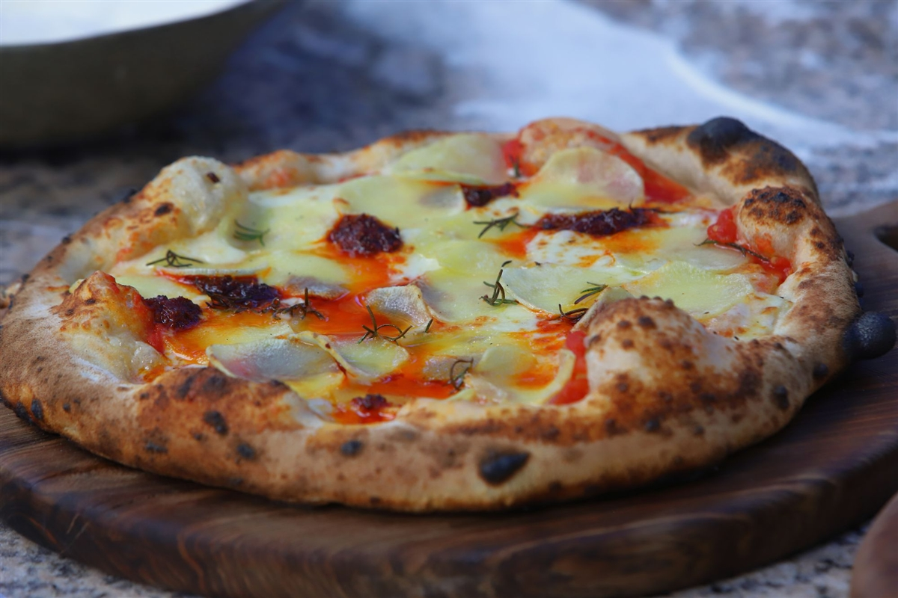

Receta de Pizza Napolitana

Descripción
La pizza napolitana, de masa tierna y delgada pero bordes altos, es la versión propia
de la cocina napolitana de la pizza redonda. El término pizza napoletana, por su
importancia histórica o regional, se emplea en algunas zonas como sinónimo de pizza tonda.
Ingredientes
- BIANCA
- Muzarella 250 Gramos
- Crema La Serenísima 200 c.c.
- Pesto c/n
- Queso ahumado c/n
- Tomates secos hidratados c/n
- Zapallo horneado 150 Gramos
- MASA
- Sal 13 Gramos
- Agua 350 c.c.
- Harina 500 Gramos
- Levadura seca 5 Gramos
- ROSSA
- Romero c/n
- Muzzarella 250 Gramos
- Nduja 100 Gramos
- Papas precocidas 100 Gramos
- Salsa de tomate 200 Gramos
Paso a Paso
- MSASA
- En un bowl mezclar agua, sal y disolver.
- Añadir levadura seca, revolver e incorporar harina.
- Trabajar con las manos hasta integrar los ingredientes sin amasar.
- Dejar reposar tapada por 20 minutos y retirar del bowl y amasar hasta formar un bollo liso.
- Dejar levar en bowl tapado por 90 minutos.
- Transcurrido el tiempo dividir en 3, formar bollos y colocar en placa con harina en la basetapado
con papel film.
- Dejar levar en heladera por 24 hs.
- Retirar el bollo y espolvorear con semolín.
- Con los dedos de afuera hacia el centro marcar el borde sin apretarlo.
- PIZZA BIANCA
- Dar forma a la pizza y colocar en la superficie crema, muzarella rallada, zapallo asado,
tomates secos hidratados, queso ahumado rallado y terminar con hilos de pesto.
- Cocinar en horno de barro a 450° C por 90 segundos girándola a mitad de cocción.
- PIZZA ROSSA
- Dar forma a la pizza y colocar en la superficie salsa de tomates, muzarella rallada, nduja
en trozos, rodajas finas de papa precocidas, hojas de romero y un chorrito de aceite de oliva.
- Cocinar en horno de barro a 450° C por 90 segundos girándola a mitad de cocción.
Volver.